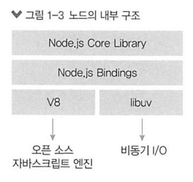

자바스크립트 런타임
- 자바스크립트 런타임
-
Node.js는 크롬 V8 자바스크립트 엔진으로 빌드된 자바스크립트 런타임입니다.
Node.js는 이벤트 기반, 논블로킹 I/O 모델을 사용해 가볍고 효율적입니다.
Node.js의 패키지 생태계인 npm은 세계에서 가장 큰 오픈 소스 라이브러리 생태계이기도 합니다.
- 런타임
- 특정 언어로 만든 프로그램들을 실행할 수 있는 환경을 뜻합니다.
따라서 노드는 자바스크립트 프로그램을 컴퓨터에서 실행할 수 있게 해줍니다.
기존에는 자바스크립트 프로그램을 인터넷 브라우저(브라우저도 자바스크립트 런타임입니다.) 위에서만 실행할 수 있었습니다.
브라우저 외의 환경에서 자바스크립트를 실행하기 위한 여러 가지 시도가 있었으나,
자바스크립트의 실행 속도 문제 때문에 모두 큰 호응을 얻지는 못했습니다.
하지만 2008년 구글이 V8 엔진을 사용하여 크롬을 출시하자 이야기가 달라졌습니다.
당시 V8 엔진은 다른 자바스크립트 엔진과 달리 매우 빨랐고, 오픈 소스로 코드도 공개되었습니다.
속도 문제가 해결되자 라이언 달(Ryan Dahl)은 2009년 V8 엔진 기반의 노드 프로젝트를 시작했습니다.

노드는 V8과 더불어 libuv라는 라이브러리를 사용합니다.
V8과 libuv는 C와 C++로 구현되어 있습니다.
여러분이 코딩한 자바스크립트 코드는 노드가 알아서 V8과 libuv에 연결해주므로 노드를 사용할 때 C와 C++는 몰라도 됩니다.
libuv 라이브러리는 노드의 특성인 이벤트 기반, 논블로킹 I/O 모델을 구현하고 있습니다.
노드는 스스로를 이벤트 기반, 논블로킹 I/O 모델을 사용해 가볍고 효율적이라고 표현했습니다.
그럼 이 모델이 무엇인지, 그리고 장단점으로는 어떤 것들이 있는지 알아봅시다.